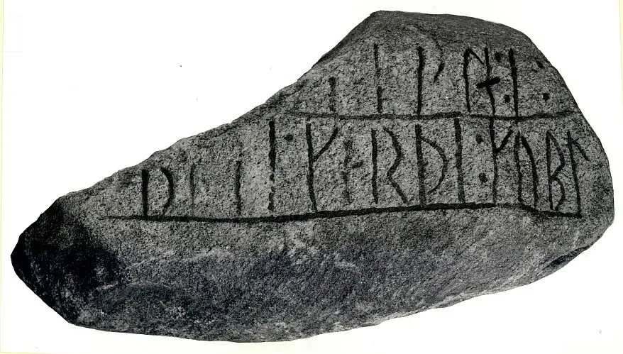
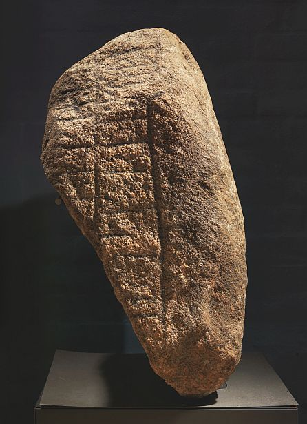

Jelling 3 - Letztes Update 20.06.2023
Listennummer : DR ohne / DK SJy 12
Navidaten: 55.75673 9.41972 oder: Gormsgade 23, 7300 Jelling :
Transliteration: : b(a)si : karþi : kubl | ---la : i :
Dieses Runensteinbruchstück wurde 1964 durch Professor Carl Johan Becker (*3.9.1915 - 3.6.2001, dänischer Archäologe) und Magister Olfert Voss (*02.04.1926 - 07.02.2014, dänischer Archäologe) im Zusammenhang mit archäologischen Untersuchungen in der Mauer der Kirchhofeinfriedung von Jelling gefunden. Von daher fehlen alle weiteren Informationen zu seinem ursprünglichen Standort usw. Die erhaltene Inschrift liest sich dem Fragment nach zu urteilen, in paralleler Reihenfolge von unten nach oben, beginnend in der unteren rechten Ecke.
Ob der in der Inschrift erwähnte "Basse" gleichzeitig mit Königin Thyre, König Gorm und deren Sohn Harald Blauzahn in der Region gelebt hat, ihnen vielleicht sogar begegnet ist oder gar mit ihnen z.B. beim Essen zusammensaß, weiß man auch nicht.
Der Runenstein ist heutzutage in der Dauerausstellung "Kongernes Jelling" aufgestellt.
Das Wort "kuml" kann in diesem Fall sowohl Einzahl "...das Denkmal" oder aber auch Mehrzahl "...die Denkmäler" bedeuten).


Meine beiden Fotos von meinem letzten Besuch am Freitag, 17.06.2022, im Rahmen meiner 2022er Jütland Wikinger Tour.
Unmittelbar nach der Entdeckung war wohl in 1964 dieses Foto von Lennart Larsen aufgenommen worden.

Quelle: Digitale Sammlung des Nationalmuseums in Kopenhagen - Lizenz: CC-BY-SA
Im Vorfeld zu dem 2016 erschienenen Buch von Lisbeth M. Imer (*1973, Runologin am Nationalmuseum Kopenhagen) "Danmarks Runesten - en fortælling" reiste sie mit dem Fotografen Roberto Fortuna zur Bestandsaufnahme durch die Lande. Dieser hat die Runensteine mit Schräglicht aufgenommen und darüber wirklich herausragende Fotos erzielt. Diese Fotografien stammen vom November 2011.

Quelle: Digitale Sammlung des Nationalmuseums in Kopenhagen - Lizenz: CC-BY-SA
Den Eintrag zu diesem Runenstein aus der dänischen Runen Datenbank im Internet kann man hier abrufen.
Informationen in "Fund og Fortidsminder" zu diesem Runenstein fand ich bei einer Suche über die Kartenfunktion nicht.
Über die Webseite "Runes" - ein Forschungsprojekt der Akademie zu Göttingen - kann man diese Informationen zum Runenstein von Jelling 3 abrufen.